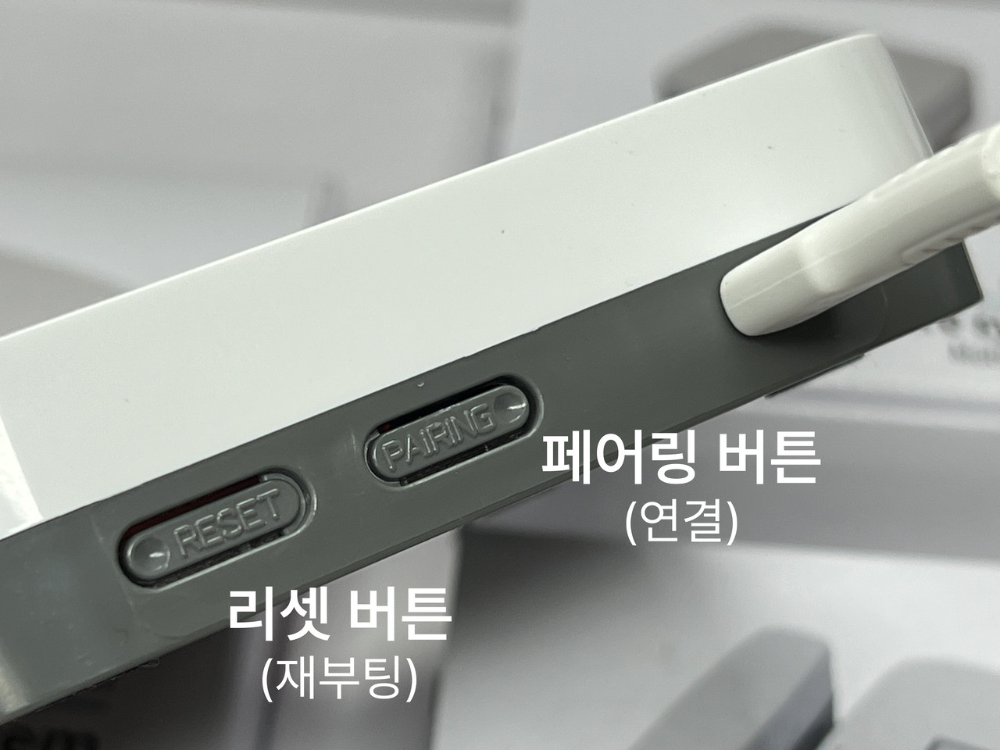
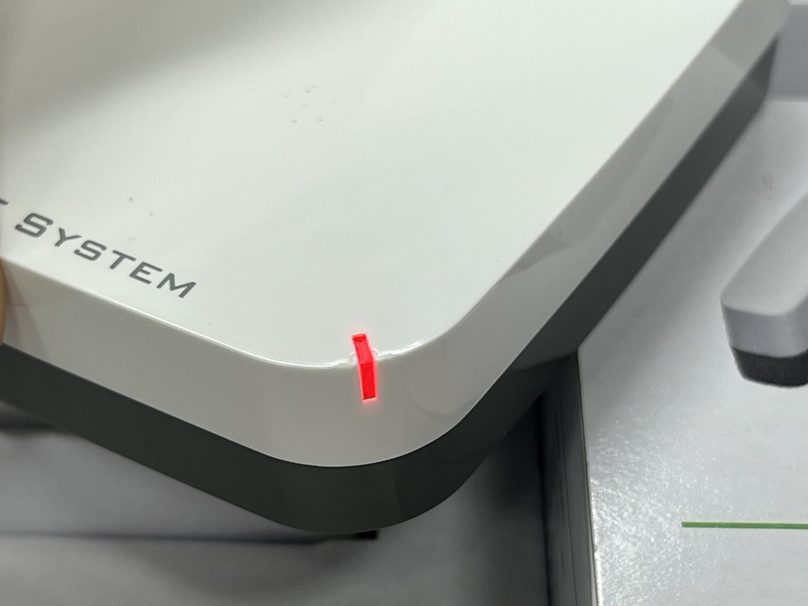
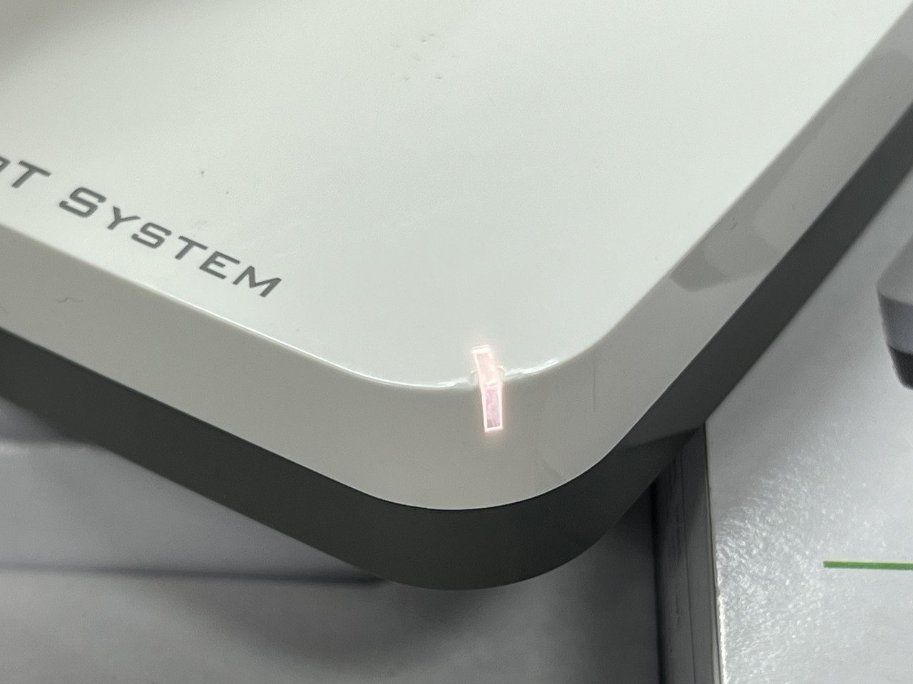
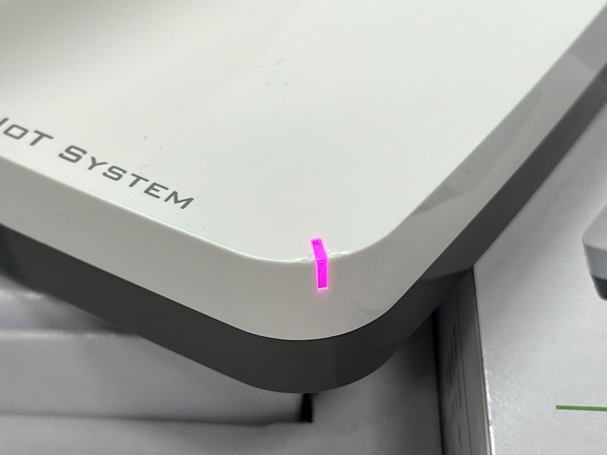
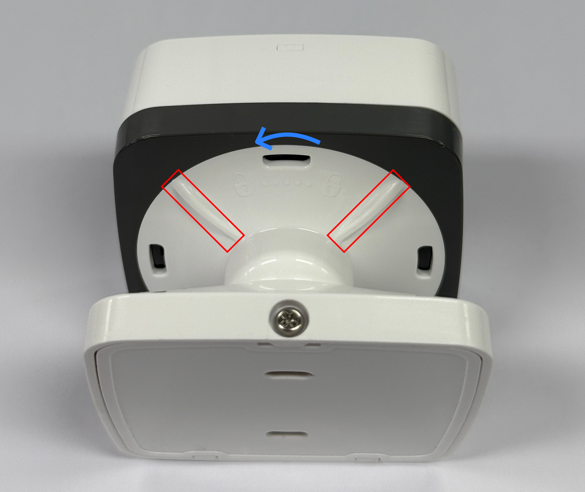
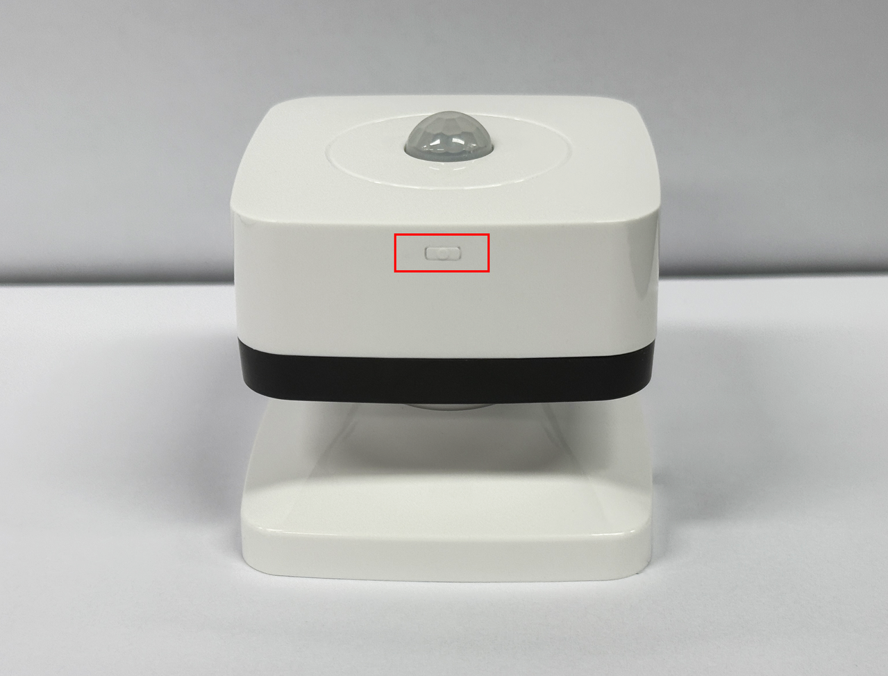
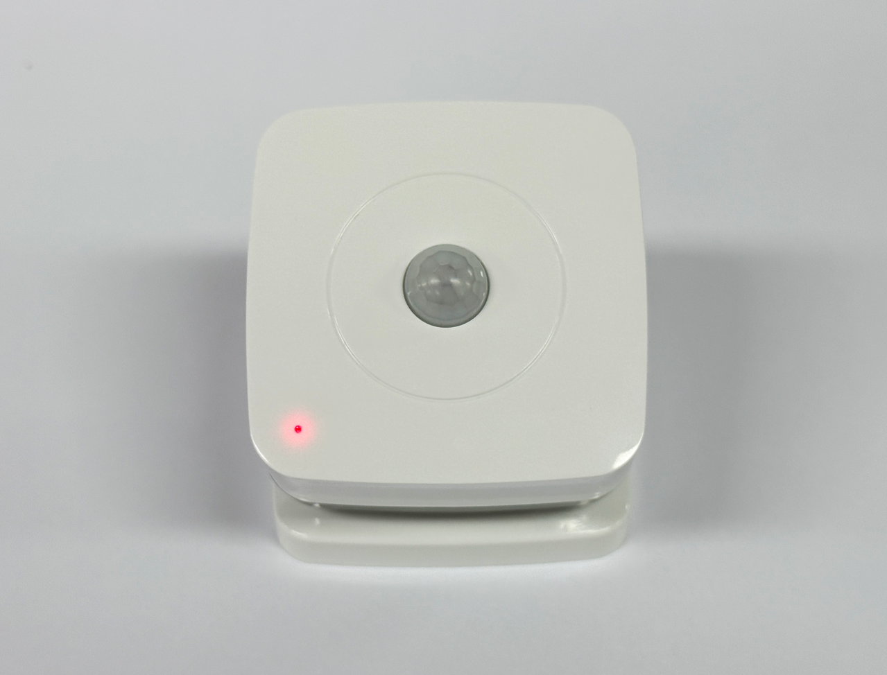

기기 이용 안내
-
허브 등록 안내
IoT 허브 준비하기
1 ) 2.4GHz WIFI(와이파이) 환경이 필요합니다.
2 ) IoT 허브에 동봉되어있는 충전기를 연결한 뒤 콘센트에 꽂습니다.
[life mind]에 허브 등록하기
1 ) 다음 과정은 'life mind' 앱에 접속하여 구독권을 등록한 뒤 진행합니다.
2 ) 하단 메뉴바를 통해 [내기기]로 들어갑니다.
3 ) 멘트를 따라 허브 추가 버튼(+)을 눌러 들어갑니다.
4 ) [허브검색] 버튼을 누르기 전 화면에 적혀있는 순서대로 페어링을 준비합니다.
5 ) 허브 기기 옆면에 위치한 Pairing(페어링) 버튼을 약 10초간 길게 눌러줍니다.
 [빨간색 - 페어링 불가]6 ) 삐 소리가 연속적으로 3번 울립니다 이때, Pairing(페어링) 버튼에서 손을 떼지말고 계속 눌러줍니다.
 [하얀색 - 페어링 불가]7 ) LED가 보라색으로 변하면 Pairing(페어링) 버튼에서 손을 뗍니다.
 [보라색 - 페어링 가능]8 ) 모든 준비가 완료되면 하단의 [허브검색] 버튼을 누릅니다.
※ 연결이 잘 되지 않을 경우, Pairing(페어링) 버튼 옆 Reset(리셋) 버튼을 누른 뒤 위 과정을 다시 진행합니다.life mind 연결 완료하기
1 ) 기기 위치 파악을 허용해주세요.
2 ) 허브 검색이 완료되었다면, 댁 내에 설치된 WIFI를 선택하여 연결해주세요.
3 ) 허브 연결이 완료되었습니다.
-
기기 등록 안내
동작감지센서 연결 준비하기
1 ) 동작감지센서 연결을 위해 파나소닉 CR123A 건전지를 끼워줍니다.
 튀어나온 부분을 이용하여 기기 아래 원판을 왼쪽으로 돌려 열어줍니다.
(자물쇠 그림 참조) 박스에 동봉된 파나소닉 CR123A 건전지를 끼워주고
원판을 제 위치에 다시 끼워줍니다.동작감지센서 연결하기
1 ) [내기기]에서 현관을 누르고 [센서추가] 버튼을 누릅니다.
2 ) [센서검색] 버튼을 누르기 전 화면에 적혀있는 순서대로 연결을 준비합니다. (아래에서 계속)
3 ) 동작감지센서 옆면에 위치한 버튼을 LED에 빨간색이 들어올 때까지 길게 눌렀다 뗍니다.
4 ) 빨간색 LED가 빠르게 깜빡거리면 앱 화면에서 [센서검색] 버튼을 누릅니다. ※ 혹, LED가 빠르게 깜빡거리지 않는다면 15초 이상 누른 후 떼보시길 바랍니다.
 옆면에 위치한 버튼을 LED에 빨간색이
들어올 때까지 길게 눌렀다 뗍니다.  빨간색 LED가 빠르게 깜빡거릴 때
앱 화면의 [센서검색] 버튼을 누릅니다.동작감지센서 설치하기

1 ) 동작감지센서는 외출할 때 반드시 거쳐가야만 하는 현관 부근에 설치해야합니다.
2 ) 정확한 재실여부 판단을 위해 일상생활시에도 움직임이 감지되도록 설치하면 좋습니다.
3 ) 기기는 반드시 실내에 설치하고 설치 전 접착면을 깨끗하게 유지해야합니다.
4 ) 동작감지센서 하부에 붙일 수 있는 양면스티커가 포함되어있습니다.
 현관 입구 천장에 붙여 입출입을 인식하도록 설치
현관 입구 천장에 붙여 입출입을 인식하도록 설치
 현관문 입구 앞에 있는 신발장 등에 붙여
현관문 입구 앞에 있는 신발장 등에 붙여
입 출입을 인식하도록 설치문열림센서 연결 준비하기
1 ) 문열림센서 연결을 위해 파나소닉 CR2450 3V 건전지를 끼워줍니다.
 기기 아래 육각형 모양을
기기 아래 육각형 모양을
왼쪽으로 밀듯이 열어줍니다. 박스에 동봉된 파나소닉 CR2450 3V 건전지를 끼워주고
박스에 동봉된 파나소닉 CR2450 3V 건전지를 끼워주고
육각형 마개를 다시 제 위치에 끼워줍니다.문열림센서 연결하기
1 ) [내기기]에서 현관을 누르고 [센서추가] 버튼을 누릅니다.
2 ) [센서검색] 버튼을 누르기 전 화면에 적혀있는 순서대로 연결을 준비합니다. (아래에서 계속)
3 ) 문열림센서 옆면에 위치한 버튼을 LED에 빨간색이 들어올 때까지 길게 눌렀다 뗍니다.
4 ) 빨간색 LED가 빠르게 깜빡거리면 앱 화면에서 [센서검색] 버튼을 누릅니다.
※ 혹, LED가 빠르게 깜빡거리지 않는다면 15초 이상 누른 후 떼보시길 바랍니다. 옆면에 위치한 버튼을 LED에 빨간색이
옆면에 위치한 버튼을 LED에 빨간색이
들어올 때까지 길게 눌렀다 뗍니다. 빨간색 LED가 빠르게 깜빡거릴 때
빨간색 LED가 빠르게 깜빡거릴 때
앱 화면의 [센서검색] 버튼을 누릅니다.문열림센서 설치하기

1 ) 기기는 가급적 실내에 설치하고 설치 전 접착면을 깨끗하게 유지해야합니다.
2 ) 문열림센서 하부에 붙일 수 있는 양면스티커가 포함되어있습니다.
3 ) 문열림센서의 경우 센서간의 거리가 멀어질수록 제대로 인식되지 않을 수 있습니다.
4 ) 본체와 자석이 서로 수평으로 마주보도록 부착합니다.
5 ) 기기를 옮겨 설치하는 경우 기기가 파손되지 않도록 주의합니다.